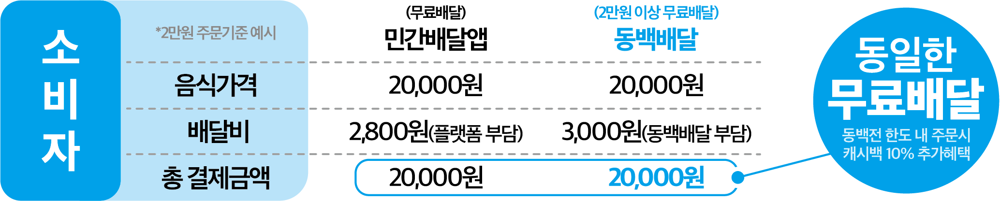
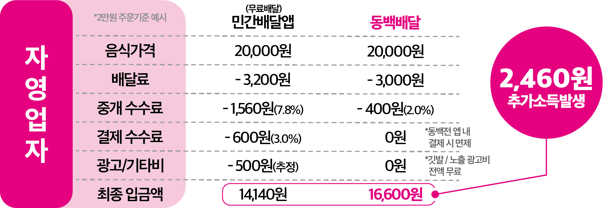
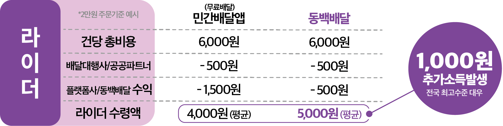
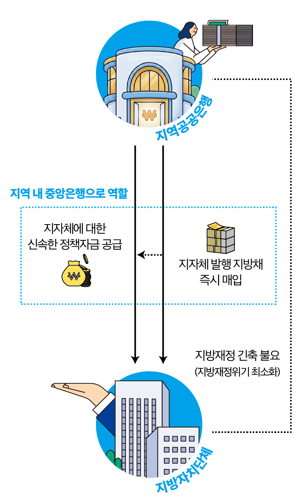
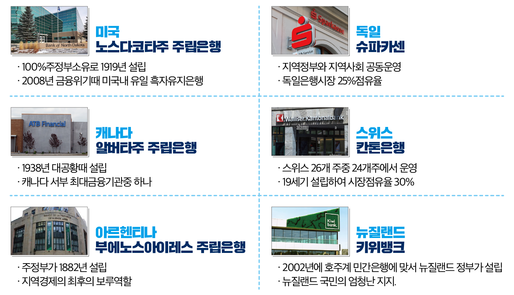
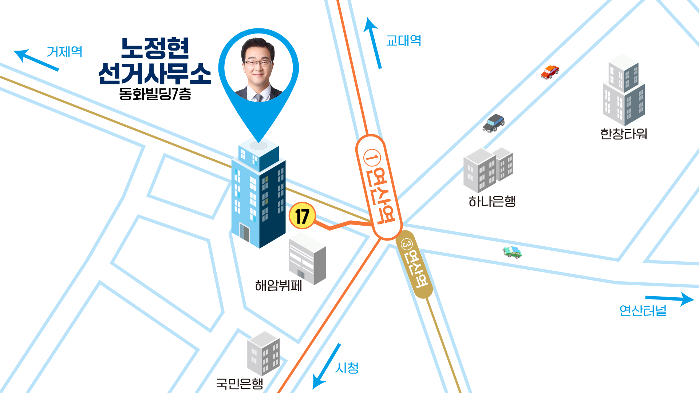

노정현의 힘이 되어주십시오.
- 10만원까지 전액세액공제 (연말정산시 전액돌려 받음)
- 10만원 초과분은 연말정산시 15% 세액공제 됩니다.
- 1인당 연간 최대 500만원까지 후원이 가능합니다.
- 법인, 단체, 외국인, 교원, 공무원은 후원이 불가합니다.
- 영수증 발급 : 이름/ 주민번호/ 전화번호/ 주소/ 후원금액/ 입금일 010-5840-3422로 문자보내주세요
- 22대 국회의원선거 민주당·진보당 단일후보
- 6대, 7대 연제구의회 의원
- 동명초·연산중·양정고 (졸)
- 부산대 상과대학 경영학부 (졸)
- 22대 국회의원선거 민주당·진보당 단일후보
- 6대, 7대 연제구의회 의원
- 토곡은빛노인학교 교장(전)
- 진보당부산시당위원장
- 연제주민대회 상임조직위원장
- 가계부채119 부산 상담센터장
- 1급 사회복지사
- 동명초·연산중·양정고 졸업
- 부산대 상과대학 경영학부(졸)
- 4남매의 아빠
언제까지 배민·쿠팡의
'수수료 노예'로 살아야 합니까?
배달앱은 특별한 기술도 아닙니다. 그저 먼저 시작했다는 이유만으로 우리 동네 사장님의 땀방울과 부산시민의 소중한 돈이 매달 수천억 원씩 수도권·해외 자본으로 유출되고 있습니다.
서울은 신한은행-땡겨요 민관합동 배달앱이 점유율 10%달성 중입니다. 부산은 불안정한 민관 합동 앱을 넘어 완전 공공배달앱으로 점유율 70% 기적을 향해 달릴 수 있습니다.
불가능한 일이 아니라 부산시가 무능하고 무관심할 뿐입니다.
동백배달 압승!
소비자-자영업자-라이더 상생으로 부산경제 살리는 앱, 안 쓸 이유가 있겠습니까


- 추가혜택1 익일 정산 시스템 (민간 앱 정산은 3~7일)
- 추가혜택2 방문포장 전액무료
- 추가혜택3 마케팅자율권 : 민간앱 알고리즘에 종속되지 않고, 단골손님 쿠폰 발행권한 등을 사장님께

공공라이더 시스템 구축 신속·안전 배달망 구축으로 지역대표 좋은 일자리로 육성
- 투입예산은 세금낭비가 아니라 부산 경제 부활을 마중물!
- 장차로 부산공공은행 설립으로 수익기반 완벽한 재정자립 가능
⇒ 진보당이 제안하는 궁극적 모델
진보당 윤종오 의원(울산 북구)은 플랫폼 독점 규제와 자영업자 보호를 위해 ‘온라인 플랫폼법’을 발의(25.07)했습니다. 그런데 쿠팡·배민의 로비로 미국(트럼프)이 공개 반대하여 법안 통과가 불투명해졌습니다. 그렇다면 공공배달앱을 성공시켜 시장논리로 악질플랫폼을 직접 퇴출시킵시다.
BNK 부산은행은 부산시와 16개 구군 예산을 맡아 운용하는 시(구)금고입니다. 막대한 돈을 맡아 유무형의 수익을 내면서도 겨우 0.x%대의 쥐꼬리 만한 이자를 줍니다.
게다가 이름만 부산은행이지 외국인 자본이 46%, 대주주는 롯데입니다.
수익은 고스란히 외국과 서울로 빠져나갑니다.
지자체가 직접 자기예산(기금포함)을 자본금으로 공공은행을 설립하면 수익은 모두 부산시민의 것이 됩니다. 아울러 부산의 돈이 서울로 빠져나가지 않고 부산안에서 돌면서 부산의 경제를 살리고 일자리를 만들어 냅니다.
이 좋은 공공은행 왜 안하냐구요?
은행법이 막고 있기 때문입니다
- 21대 국회 진보당 강성희 의원 발의 (임기 만료 폐기)
- 22대 국회 민주당 송재봉 의원 발의 (정무위원회 검토 중)
공공성과 일자리로 부산경제 얼마든지 살릴 수 있습니다
문제는 돈입니다
빨려들어가는 걸 막아야합니다
부산에서 순환하면서 부산경제를 살찌웁니다.

공적금융지원
- 부산시민, 소상공인, 부산중소기업 저리대출
재정부담 없는 공공정책
- 해상풍력 등 공공에너지-해양공공신산업, 공공은행, 공공배달 등 공공 정규직 청년일자리 대폭 창출
- 청년창업 무이자 대출론 지원
- 시니어 일자리 대폭확대
- 경력단절기간 여성 공공일자리 (워킹스쿨버스,상담,교육)
- 무료마을공공버스 (연제구 전지역을 역세권으로)
이윤대신 지역살리기를 목적으로
지자체가 설립한 공공은행 성공사례

- 걸어 다니는 스쿨버스 : 교통안전지도사가 초등 1~3학년 학생들의 통학길을 직접 동행합니다.
- 안심 공공서비스 : 교통사고는 물론 각종 범죄로부터 어린이들 보호
- 서울 성동구, 광진구, 경기 부천시 등 수도권은 활발히 시행중이며 확대 추세
- 이재명 정부 : '워킹스쿨버스'를 전국, 전학년으로 확대한다는 계획 발표.(2025년 하반기)
그러나 국비와 시비 및 구비 매칭이 중요한 과제인 만큼 조례를 도입하는 적극적인 지자체부터 시행될 예정.
- 조례부재 : 부산시와 각 구청, 구의회의 무관심과 무능
- 예산 편성 후순위 : 조례가 제정된 일부 구도 예산편성 없음
| 동래구 | 사하구 | 연제구 | 영도구 | 해운대구 | 남구 | 제정 촉구 서명전달 | ||
|---|---|---|---|---|---|---|---|---|
| 주민요구안 | 선정 | 선정 | 선정 | 선정 | 선정 | 선정 | 동구 | 사상 |
| 참가자 수 | 3,738 | 7,141 | 5,600 | 4,544 | 5,076 | 4,055 | 123 | 100 |
| 조례제정 | X | O | 계류 중 | X | X | 계류 중 | 일부개정 | X |
| 예산편성 | X | X | X | X | X | X | X | X |
오시는 길

부산시 연제구 월드컵대로 141, 동화빌딩 7층
혜암뷔페 옆 건물